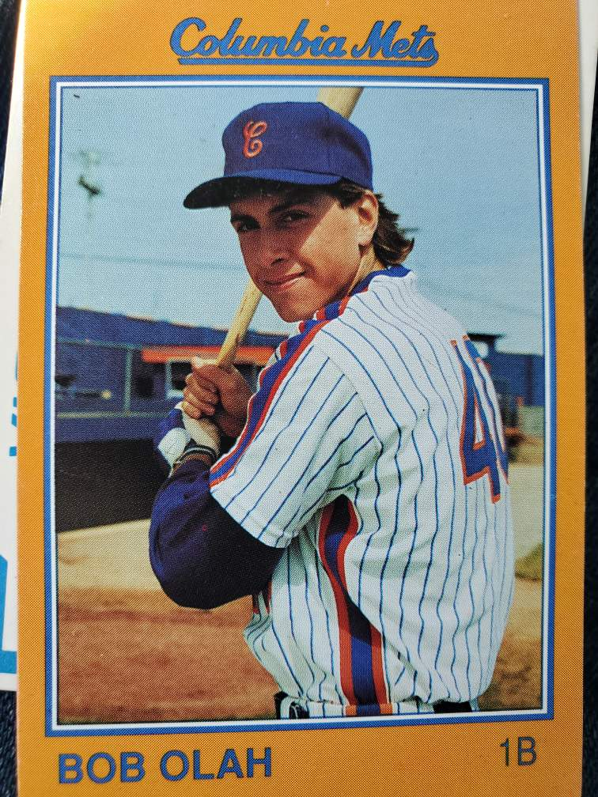
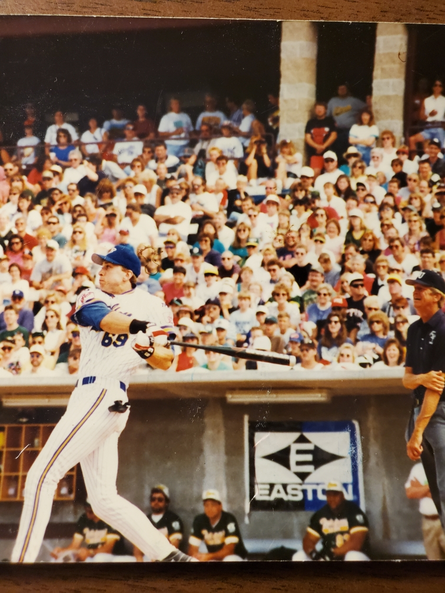
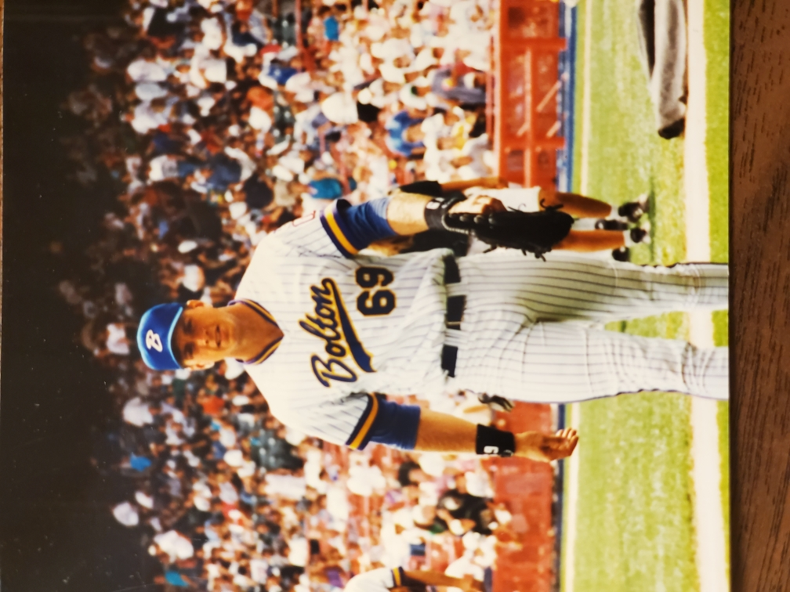
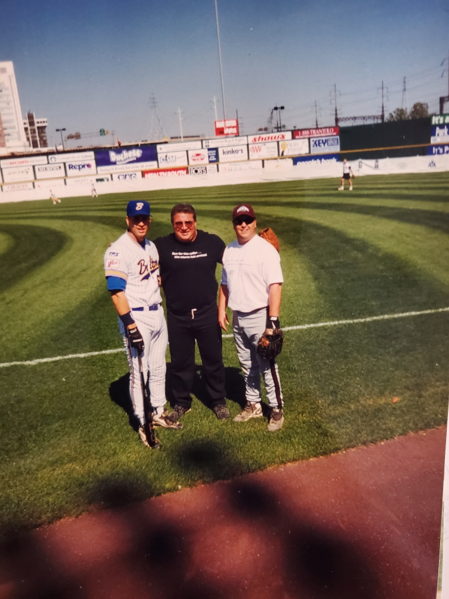
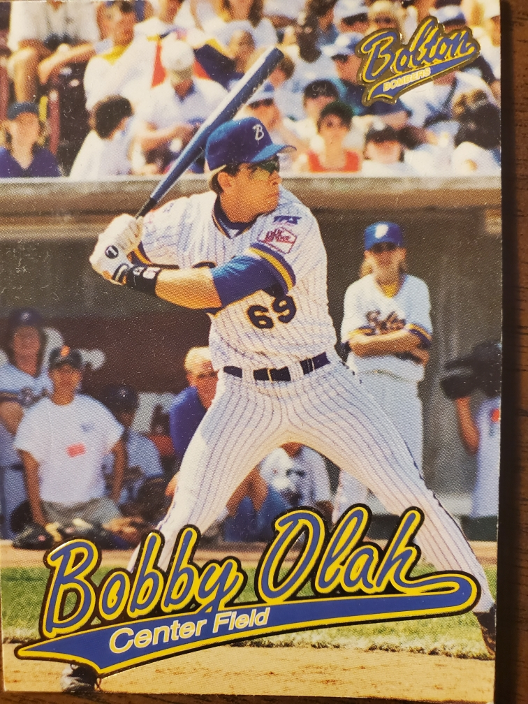
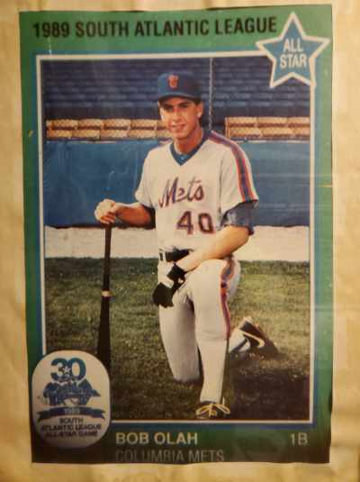
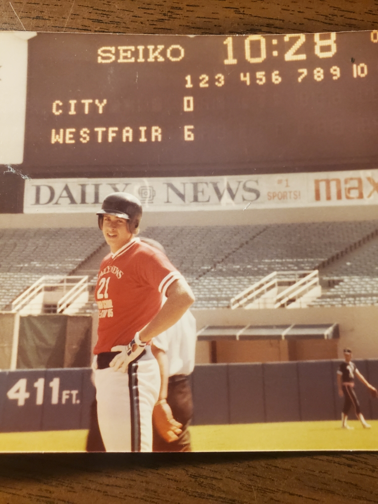

Meet Bob Olah
Over 40 Years of Baseball Experience
From little league to pro softball — Bob Olah has done it all. A semi-pro slugger turned coach, Bob brings decades of real-world playing and training experience to athletes of all ages.
My Story
I’ve been swinging bats for 37+ years — playing, coaching, and training across every level of baseball. At 17, I hit a home run in Yankee Stadium. I was drafted by the New York Mets. I even had the chance to play for Michael Bolton’s team. My journey has taken me across leagues and locker rooms, and I’ve seen firsthand what it takes to succeed in this game.
Over the years, I’ve met and trained with elite athletes, dealt with my share of injuries, and learned the hard lessons that every ballplayer faces. That’s why I built this site — to cut the fluff and give you real tools that actually work.
"No nonsense. No hype. Just real baseball." – Bob Olah
Why I Coach
I’m here to help the next generation of players dominate at the plate, train with purpose, and stay healthy. Whether you're in little league or chasing college ball, I’ll teach you how to level up with the same grit that got me through four decades of this sport.
This site is packed with what you need: hitting drills, training methods, injury prevention, and mindset tips — all straight from the field.
Let’s get to work.
Explore the site. Train smart. Swing harder.
Throwback Photos
Check out some photos from my playing days - from little league all the way to semi-pro and beyond.






Stance & Grip
Your stance should feel athletic and relaxed. Hands slightly above the shoulders with a firm but relaxed grip on the bat.
Swing Mechanics
Focus on balance, rotation, and bat speed. Engage the hips first, keep your head still, and follow through naturally.
Mindset at the Plate
Anticipate pitches, stay calm under pressure, and always look for your pitch. Confidence and discipline go hand-in-hand.
Drills to Improve Contact
Use tee work, soft toss, and short bat drills to build better timing and precision.